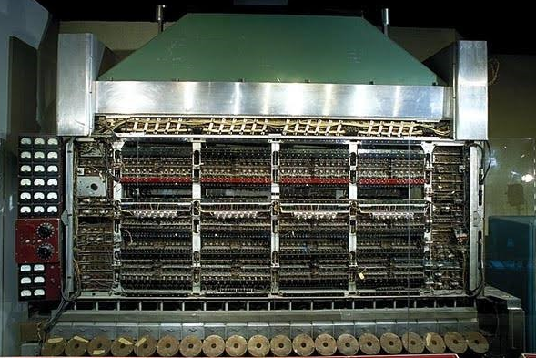

|  |
Em 1944, John von Neumann se juntou como consultor à equipe da Universidade da Pensilvânia, onde estava sendo desenvolvido o ENIAC (Electronic Numerical Integrator and Computer). A equipe estava buscando maneiras de melhorar o desenvolvimento de programas e decidiu explorar o conceito de armazenamento de programas na forma de números. Esse trabalho acabou sendo fundamental para a evolução da arquitetura dos computadores nas décadas seguintes. Em 1944, John von Neumann começou a colaborar com a equipe responsável pelo desenvolvimento do ENIAC na Universidade da Pensilvânia. Sua experiência e conhecimento em matemática e lógica computacional foram essenciais para a evolução do projeto. Em 30 de junho de 1945, von Neumann publicou o "First Draft of a Report on the EDVAC". Este relatório foi um marco na história da computação, estabelecendo o que viria a ser conhecido como a "arquitetura de von Neumann". O conceito central da arquitetura de von Neumann era o de "programa armazenado". Isso significava que tanto os dados quanto as instruções de programa poderiam ser armazenados na mesma memória. Essa abordagem contrastava com os sistemas anteriores, onde o programa era muitas vezes hard-coded ou inserido manualmente. A arquitetura de von Neumann introduziu a ideia de uma memória unificada que armazena tanto os dados quanto as instruções, permitindo que o computador alterasse o programa e os dados enquanto executava tarefas. A arquitetura propôs uma estrutura básica onde o processador (ou CPU) lida com a execução das instruções, enquanto a memória armazena tanto os dados quanto o programa. Isso tornou a programação mais flexível e eficiente, pois permitia a modificação e execução dinâmica do código. John von Neumann desempenhou um papel crucial na evolução da computação ao introduzir a arquitetura que ainda é amplamente utilizada hoje. Seu trabalho com o conceito de programa armazenado e a memória unificada estabeleceu um paradigma fundamental para o design de computadores, influenciando não apenas os projetos da época, mas também as gerações futuras de máquinas computacionais. |